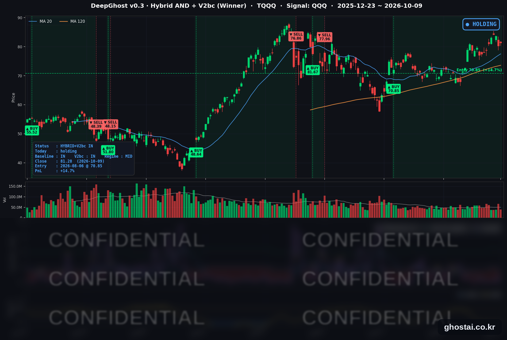

주간 반도체 -5%/S&P 500 1.15% 상승
· Ghost.AI 데일리 리포트
👻 매일 시그널과 히스토리를 홈페이지에서 한눈에 → www.ghostai.co.kr
회원 페이지 안내 — 회원 가입하시면 커버리지 전 종목의 원본 시그널과 분석 레포트를 매일 확인하실 수 있습니다. 회원 페이지는 블로그·유튜브보다 먼저 업데이트됩니다. 선착순 100명을 모집하고 있으며, 이메일과 필명만으로 가입하실 수 있고 서비스 사용료는 받지 않습니다. 가입 신청 후 운영자 승인을 거쳐 이용하실 수 있습니다.
스페이스X가 미국 전국 800MHz 주파수를 인수하기로 하면서 T-모바일·AT&T·버라이즌이 하루에 10% 넘게 내렸고, 기지국 리츠 크라운캐슬은 15.60% 올랐습니다. 전일 내렸던 소프트웨어 종목이 반등해 S&P 500은 0.59% 오른 7,811.54로 마감했고, 사상 최고 종가와의 차이는 0.09%입니다. 한 주로 보면 S&P 500은 1.15% 올랐지만 반도체 ETF(SOXX)는 5.01% 내렸습니다. SOXX가 주간 5% 넘게 내렸는데 나스닥100(QQQ)이 오른 것은 2008년 7월 이후 처음입니다(금요일 종가 기준). TQQQ 전략은 46거래일째 보유를 유지했고, 전략 수익률은 +14.72%로 한 주 전(+14.34%)과 비슷한 자리에서 한 주를 마쳤습니다.
📊 오늘의 매매 신호
| 항목 | 내용 |
|---|---|
| 오늘 할 일 | ✅ 아무것도 안 해도 됩니다 |
| 포지션 상태 | 📈 TQQQ 보유 중 (IN POSITION) |
| 매수 진입일 | 2026-08-06 (46거래일째) |
| 진입가 → 현재가 | $70.85 → $81.28 |
| 현재 포지션 수익 | +14.72% |
TQQQ 시그널 — IN POSITION
현재 상태: 매수 포지션 유지 중 | 이번 포지션 수익 +14.72%

QQQ가 +0.49% 오르면서 TQQQ는 +1.31% 오른 81.28달러로 마감했습니다. 전략의 평가수익률은 전 거래일 +13.24%에서 +14.72%로 올랐습니다. 오늘 새 신호는 없었고 전략은 보유를 유지했으며, 모델 기준으로 매도 신호까지의 여유는 전일보다 늘어 한 주 전과 비슷한 수준이 됐습니다. TQQQ 종가는 사상 최고 종가(6월 2일, 87.22달러)보다 6.81% 낮습니다.
한 주 동안 전략 수익률은 크게 오르내렸습니다. 10월 2일 +14.34%에서 출발해 10월 6일 진입 이후 최고인 +18.91%까지 올랐고, 10월 8일 OpenAI 매출 보도로 QQQ가 1.34% 내리면서 +13.24%로 낮아졌다가 금요일 반등으로 +14.72%가 됐습니다. 주간 등락은 QQQ +0.23%, TQQQ +0.33%입니다.
이번 주 반도체 ETF는 5% 넘게 내렸지만 QQQ는 소폭 올라 TQQQ도 한 주를 소폭 상승으로 마쳤습니다. 반도체는 나스닥100에서 비중이 큰 업종이라, 반도체 약세가 다음 주 QQQ 하락으로 이어지는지가 확인할 부분입니다. 10월 14일 9월 CPI와 15일 PPI·소매판매도 같은 주에 나옵니다.
오늘 미국 시장 — 시황 요약
지수 마감
| 지수 | 종가 | 등락률 | 주간 | 사상 최고 종가 대비 |
|---|---|---|---|---|
| S&P 500 | 7,811.54 | +0.59% | +1.15% | -0.09% (10/6) |
| 나스닥 종합 | 27,366.17 | +0.64% | +0.64% | -0.85% (10/6) |
| 다우존스 | 51,654.95 | +0.83% | +0.93% | -4.96% (8/5) |
| 러셀 2000 (IWM) | 278.94 | +0.49% | -0.92% | -8.57% (8/14) |
| QQQ (나스닥100) | 751.27 | +0.49% | +0.23% | -1.10% (10/6) |
| TQQQ | 81.28 | +1.31% | +0.33% | -6.81% (6/2) |
| 반도체 ETF (SOXX) | 559.40 | -0.69% | -5.01% | — |
10월 7·8일 이틀 내린 뒤 반등했습니다. S&P 500은 10월 6일 사상 최고 종가(7,818.93)와 0.09% 차이까지 올랐지만 넘지는 못했고, 오늘 사상 최고 종가를 기록한 지수는 없습니다. 다우 +0.83%는 9월 25일 이후 가장 큰 상승입니다. S&P 500 구성종목 494개 중 306개(61.9%)가 올랐습니다.
한 주 흐름(10/5~10/9): 월·화 이틀 올라 S&P 500과 나스닥 종합이 10월 6일 사상 최고 종가를 기록했고, 10월 7일 10년물 금리 급등과 10월 8일 OpenAI 매출 보도로 이틀 내린 뒤 금요일에 반등했습니다. S&P 500의 주간 +1.15%는 9월 25일 주간 이후 가장 큰 상승이고, 구성종목 494개 중 345개(69.8%)가 한 주간 올랐습니다. 반면 SOXX는 4거래일 연속 내려 8월 21일 주간 이후 가장 큰 주간 하락을 기록했습니다. IWM은 5주 연속 내렸습니다.
국채 금리 동향
| 만기 | 수익률 | 전 거래일 대비 | 주간 |
|---|---|---|---|
| 3개월 | 4.057% | +1.4bp | +6.4bp |
| 2년 (재무부 공시) | 4.80% | +5bp | -3bp |
| 5년 | 5.021% | +3.0bp | -3.4bp |
| 10년 | 5.244% | +1.3bp | -3.3bp |
| 30년 | 5.600% | -0.6bp | -3.0bp |
단기물 중심으로 올랐습니다. 5년물은 하루 만에 다시 5% 위로 올라섰고, 30년물만 소폭 내렸습니다. 만기가 짧을수록 더 많이 올라 커브가 평탄해졌고, 재무부 기준 2년물과 10년물의 차이는 47bp에서 44bp로 좁아졌습니다. 10년물과 3개월물의 차이는 118.7bp로 역전은 없습니다. 같은 날 미시간대 조사에서 기대 인플레이션이 두 달 연속 오른 것이 단기물 상승과 함께 나왔고, 금리에 민감한 주택건설 4종목은 모두 내렸습니다.
한 주로는 10년물(-3.3bp)·30년물(-3.0bp)·5년물(-3.4bp)이 내렸고 3개월물은 6.4bp 올랐습니다. 10월 12일(월)은 콜럼버스 데이로 채권시장이 휴장합니다.
연준 발언 & 금리 패스
- 10월 9일: 연준 이사의 연설 일정은 없었고, 지역 연은 총재의 공개 발언도 확인되지 않았습니다.
- 무살렘(Musalem) 세인트루이스 연은 총재 (10/8): "인플레이션을 적시에 목표로 되돌리려면 추가 긴축이 필요하다"고 말했고, 금리는 "앞으로 6~9개월 사이 적절한 시점에 더 올라야 한다"고 했습니다. 10월 회의에 대해서는 "모든 회의에 열린 마음으로 들어간다"며 결정을 언급하지 않았습니다.
- 쿡(Cook) 이사 해임 사유 검토 위원회: 트럼프 대통령은 쿡 이사의 주택담보대출 사기 의혹을 검토할 3인 위원회를 만들었고, 11월 5일 백악관에서 비공개 청문회가 열립니다. 쿡 이사는 의혹을 부인하고 있습니다.
무살렘 총재의 발언은 매파적이지만, 전일 월러 이사와 마찬가지로 10월 회의의 인상 여부는 열어 두었습니다. 쿡 이사 건은 금리 경로보다 연준 독립성과 관련된 사안입니다. 정책금리는 3.75~4.00%이고, 10월 17일(토)부터 위원들의 공개 발언 금지 기간이 시작됩니다. 10월 27~28일 FOMC 전 마지막 큰 지표는 10월 14일 9월 CPI입니다.
오늘의 핵심 이슈
- 스페이스X 주파수 인수에 통신 3사 10% 넘게 하락. 스페이스X는 사모펀드 그레인 매니지먼트가 보유한 미국 전국 800MHz 주파수를 인수하기로 했습니다(월스트리트저널 보도 약 80억 달러, 연방통신위원회 승인 필요). 위성 이동통신 서비스 스타링크 모바일이 기존 통신사와 직접 경쟁할 수 있다는 해석에 T-모바일(-13.27%)·AT&T(-10.82%)·버라이즌(-10.14%)이 내렸고, AT&T는 2000년 12월, 버라이즌은 2002년 7월 이후 하루 하락 폭이 가장 컸습니다. 저대역 주파수에는 지상 기지국이 필요하다는 이유로 크라운캐슬(+15.60%)·아메리칸타워(+9.30%)·SBA(+7.34%)는 올랐습니다.
- 소프트웨어 반등, 반도체는 4거래일 연속 하락. 전일 OpenAI 매출 보도로 내렸던 오라클(+4.21%)·팔로알토네트웍스(+5.09%)·시에나(+5.60%)가 올랐습니다. 같은 날 블룸버그는 OpenAI가 연말 연환산 매출을 700억 달러 이상으로 예상한다고 보도했습니다. 반면 SOXX는 0.69% 내렸고, S&P 500 반도체 업종 14종목 중 10종목이 하락했습니다.
- 미시간대 소비자심리 5월 이후 최저. 10월 예비치는 46.3(9월 48.1)이었고, 현재 여건 지수가 50.9에서 44.7로 크게 내렸습니다. 1년 기대 인플레이션은 4.7%, 장기 기대 인플레이션은 3.5%로 둘 다 두 달 연속 올랐습니다. 델타항공은 3분기 연료비가 62% 늘었다며 올해 주당순이익 가이던스를 6.50~7.50달러에서 5.10~5.60달러로 낮췄습니다.
변동성 & 투자심리
VIX는 15.41에서 14.84로 3.70% 내려 9월 22일 이후 가장 낮았습니다(한 주 전 15.31). CNN 공포탐욕지수는 전 거래일 종가 기준 37.9에서 45로 올랐지만 여전히 "공포" 구간 상단입니다(1주 전 40.0, 한 달 전 38.2). 구성 지표 중 정크본드 수요는 "극단적 탐욕", 시장 모멘텀과 안전자산 수요는 "탐욕"이고, 주가 강도와 시장 폭은 "극단적 공포"입니다. VIX는 9월 하순 수준으로 내려오고 지수는 최고치 근처까지 올랐지만 소비자심리는 5월 이후 가장 낮아, 전반적인 심리는 중립입니다.
매크로 & 원자재
| 품목 | 종가 | 등락률 | 주간 |
|---|---|---|---|
| WTI 원유 (선물) | $91.66 | +0.19% | +0.60% |
| 브렌트유 (선물) | $104.43 | +0.14% | |
| 금 (선물) | $4,220.30 | +1.52% | +1.39% |
| 원유 ETF (USO) | $148.20 | +0.42% | |
| 금 ETF (GLD) | $384.58 | +1.57% |
- 유가: 전일 이란 관련 보도로 크게 오른 뒤 오늘은 소폭 상승에 그쳤습니다. 트럼프 대통령은 러시아가 30만 톤 이상의 디젤을 미국과 국제 시장에 공급하기로 했다고 밝혔습니다.
- 금: 금 선물 +1.52%는 9월 3일 이후 가장 큰 상승입니다. 당일 재료는 확인되지 않았습니다.
- 농업: 미 농무부가 옥수수 생산 전망을 올렸고 농무부와 연방거래위원회가 농기계 시장 공동 조사를 발표해, 디어(-4.85%)·번지(-4.72%)·ADM(-3.10%) 등 농업 관련주가 함께 내렸습니다.
주요 종목 동향
| 종목 | 종가 | 등락률 | 비고 |
|---|---|---|---|
| AMZN | 262.43 | +3.29% | 8/28 이후 최대 상승, 주간 +4.34% |
| MSFT | 535.07 | +2.38% | 2025/10/29 이후 최고 종가, 주간 +3.39% |
| TSLA | 382.70 | +2.05% | 7/16 이후 최고 종가, 주간 +3.27% |
| GOOGL | 351.66 | +0.97% | |
| AVGO | 361.54 | +0.39% | 전일 -4.35% 뒤 소폭 반등 |
| QCOM | 175.50 | -0.29% | 3거래일 연속 하락, 주간 -5.07% |
| META | 718.67 | -0.31% | 4거래일 연속 하락 |
| NVDA | 229.28 | -0.52% | 3거래일 연속 하락, 사상 최고 종가(10/6) 대비 -4.16% |
| MU | 1,029.00 | -0.66% | 주간 -4.27% |
| AAPL | 336.64 | -1.11% | 사상 최고 종가(9/25) 대비 -1.30% |
| NFLX | 70.30 | -1.77% | 4거래일 연속 상승 뒤 하락, 주간 +4.83% |
| INTC | 104.70 | -2.22% | 9/16 이후 최저 종가, 주간 -12.26% |
커버리지 12종목 중 5종목이 오르고 7종목이 내렸습니다. 소프트웨어·플랫폼 쪽(마이크로소프트·아마존·테슬라·알파벳)은 오르고 반도체(인텔·마이크론·엔비디아·퀄컴)는 내렸습니다. 아마존과 마이크로소프트는 전일 OpenAI 매출 보도로 함께 내렸다가 크게 반등했습니다. 인텔은 10월 5일 머스크가 테라팹 반도체 공장에 TSMC가 참여할 수 있다고 밝힌 뒤 약세가 이어져 한 주간 12.26% 내렸습니다.
다음 일정 (미 동부시간)
- 10/12(월) 콜럼버스 데이 — 주식시장 정상 개장, 채권시장 휴장. 연준·노동통계국 발표 없음
- 10/13(화) 07:00 JP모건, 07:30 골드만삭스 3분기 실적 / 03:45 월러 이사 AI 대담(뉴델리)
- 10/14(수) 08:30 9월 CPI / 14:00 베이지북 / 05:40 보우먼 부의장 대담(방콕)
- 10/15(목) 08:30 9월 PPI·소매판매 / 23:30 워시 의장·게오르기에바 IMF 총재 대담(방콕, 현지 10/16)
- 10/16(금) 08:30 9월 수입물가 / 09:15 9월 산업생산
- 10/17(토) 연준 위원 공개 발언 금지 기간 시작
- 10/27~28 FOMC
Ghost.AI — Quantitative AI Investment
Model: DeepGhost v0.3 | Transformer-Based Deep Learning
Coverage: 14 tickers | Updated every trading day after US market close
⚠️ 본 자료는 정보 제공 목적으로만 작성되었으며 투자 권유가 아닙니다. 모든 투자의 책임은 투자자 본인에게 있습니다. 과거 성과가 미래 수익을 보장하지 않습니다.
[유의사항]
- 본 서비스는 불특정 다수를 대상으로 발행되는 단방향 정보 제공 서비스이며, 투자자 개인의 재산 상황·투자 목적·위험 선호도를 반영한 개별 투자 조언이 아닙니다.
- 고스트에이아이 주식회사는 고객과 쌍방향 의사소통(개별 상담, 맞춤형 자문 등)을 제공하지 않습니다.
- 본 콘텐츠는 투자 권유 또는 매매 주문의 청약·청약의 권유에 해당하지 않으며, 최종 투자 판단 및 그에 따른 손익의 책임은 전적으로 투자자 본인에게 있습니다.
고스트에이아이 주식회사